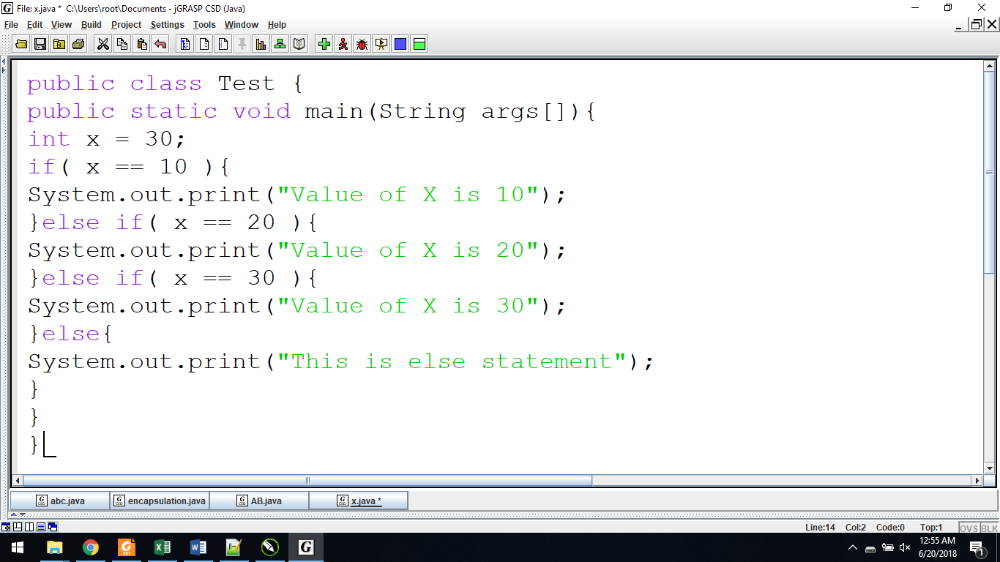

. . . . . . . . . . . . . . . . . . . .. . . . . . . . . . . . . . . . . . . .
|
An if statement consists of a Boolean
expression followed by one or more statements. |
|
|
Syntax: |
|
|
|
public class Test { { { } } |
An if statement can be followed by an optional else statement, which executes when the Boolean expression is false.
Syntax
|
{ else{
|
|
public class Test
{ |
When using if, else if, else statements there are few points to keep in mind.
|
if(Boolean_expression 1) {
else if(Boolean_expression 2) { else if(Boolean_expression 3) { else { |
